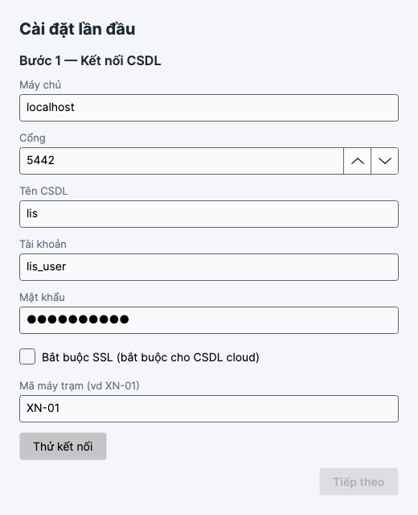
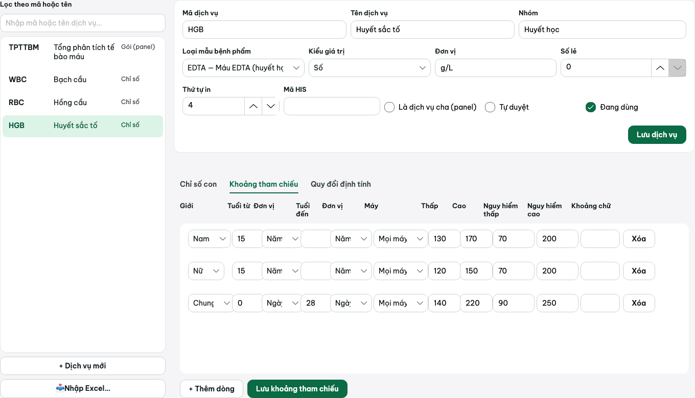
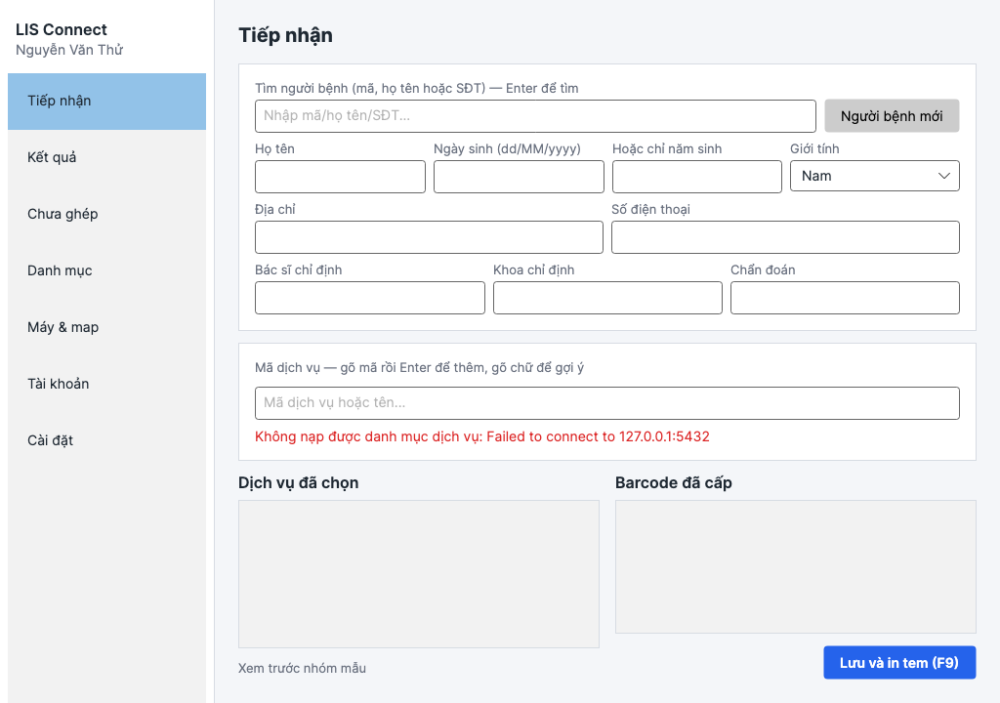
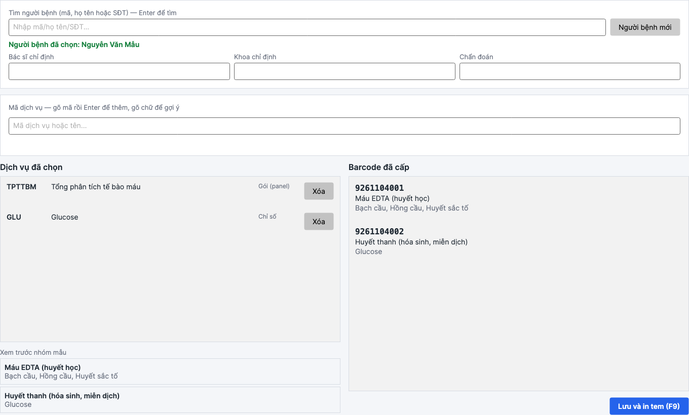
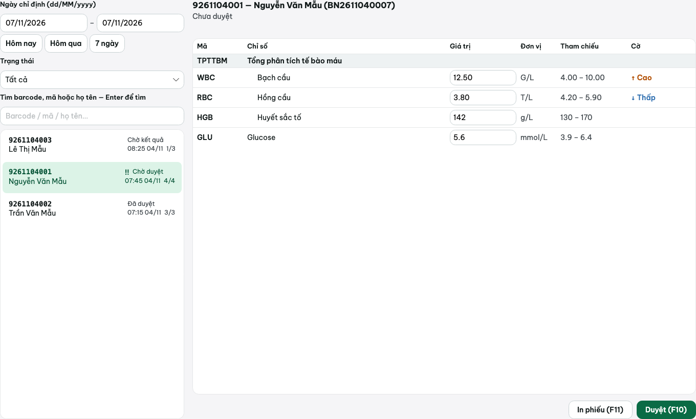
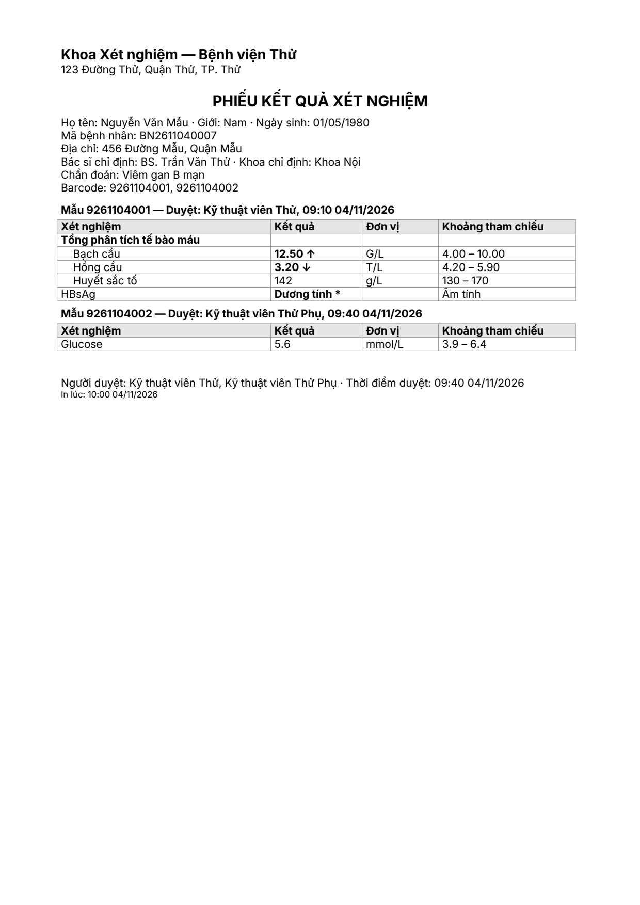

Bắt đầu từ đâu
LIS Connect giúp khoa xét nghiệm tiếp nhận người bệnh, cấp mã vạch (barcode) dán ống mẫu, ghi và duyệt kết quả, rồi in phiếu trả kết quả. Phần mềm cài trên máy Windows; toàn bộ dữ liệu lưu ở một cơ sở dữ liệu chung (gọi tắt là CSDL) để nhiều máy trong khoa cùng dùng.
Chọn phần dành cho bạn:
Cài đặt Dành cho người cài đặt (IT). Làm một lần cho cả khoa.
Cần chuẩn bị
- Máy tính Windows 10 hoặc 11, bản 64-bit. RAM từ 4 GB (nên 8 GB), ổ cứng trống 2 GB cho phần mềm.
- PostgreSQL bản 16 trở lên — đây là chương trình lưu dữ liệu (CSDL). Cài trên chính máy đó, trên một máy chủ trong khoa, hoặc thuê trên cloud.
- Không cần cài thêm .NET: phần mềm là một tệp chạy được ngay.
Ba cách bố trí
| Cách | Khi nào dùng | Ghi chú |
|---|---|---|
| Một máy | Phòng xét nghiệm nhỏ, một người dùng | CSDL và phần mềm cài cùng máy. Ô Máy chủ ghi localhost. |
| Nhiều máy dùng chung | Khoa có nhiều máy tính (tiếp nhận, kỹ thuật viên, trưởng khoa) | CSDL cài trên một máy chủ; các máy khác chỉ cài phần mềm và ghi địa chỉ IP của máy chủ. Xem Nhiều máy dùng chung. |
| CSDL trên cloud | Có máy chủ thuê ngoài, nhiều cơ sở | Bắt buộc tích Bắt buộc TLS (SSL) khi kết nối. |
Bước 1 — Cài nơi lưu dữ liệu (PostgreSQL)
Tải bộ cài tại postgresql.org/download/windows, chọn PostgreSQL 16.x (hoặc mới hơn), loại Interactive installer.
Chạy bộ cài, giữ các lựa chọn mặc định. Khi được hỏi mật khẩu cho tài khoản
postgres, đặt mật khẩu và ghi lại. Cổng giữ5432.Tạo CSDL riêng cho LIS. Mở Command Prompt và gõ lệnh dưới (nhập mật khẩu
postgreskhi được hỏi):"C:\Program Files\PostgreSQL\16\bin\psql" -U postgres -h localhostTại dấu nhắc
postgres=#, gõ lần lượt (đổimat-khau-listhành mật khẩu của bạn):CREATE DATABASE lis; CREATE USER lis_user WITH PASSWORD 'mat-khau-lis'; ALTER DATABASE lis OWNER TO lis_user; \qDòng thứ ba cho tài khoản
lis_userlàm chủ CSDL, để phần mềm tự tạo các bảng dữ liệu khi chạy lần đầu.
Bước 2 — Lấy phần mềm
Cách nhanh: tệp nén có sẵn
Nhận tệp LisConnect-win-x64.zip từ IT, giải nén vào ví dụ C:\LisConnect. Bên trong có:
app\LisConnect.exe— phần mềm chínhseedtool\Lis.SeedTool.exe— công cụ tạo dữ liệu thửmau-danh-muc.xlsx— danh mục xét nghiệm mẫu
Cách tự đóng gói từ mã nguồn
Cần cài Git và .NET 10 SDK, rồi chạy:
git clone https://github.com/candat96/lis-connect.git
cd lis-connect
powershell -ExecutionPolicy Bypass -File scripts\build-windows.ps1Khoảng 5 phút sau có tệp dist\LisConnect-win-x64.zip; giải nén như cách bên trái.
Bước 3 — Mở phần mềm lần đầu
Nhấp đôi LisConnect.exe. Lần đầu hiện cửa sổ Cài đặt lần đầu gồm 3 bước, mỗi bước bấm Tiếp theo ở góc dưới bên phải.
Bước 1 — Kết nối CSDL. Điền Máy chủ (
localhostnếu cùng máy), Cổng5432, Tên CSDLlis, Tài khoảnlis_user, Mật khẩu, và Mã máy trạm (tên riêng cho máy này, ví dụXN-01). Bấm Thử kết nối, thấy báo thành công thì nút Tiếp theo mới bấm được.Bước 2 — Tài khoản quản trị đầu tiên. Đặt tên đăng nhập, họ tên, mật khẩu (ít nhất 8 ký tự). Bước này chỉ hiện khi CSDL chưa có tài khoản nào.
Bước 3 — Thông tin cơ sở. Tên cơ sở, địa chỉ, điện thoại — in ở đầu phiếu kết quả. Xong bấm Tiếp theo, phần mềm tự tạo dữ liệu và mở màn Đăng nhập.

Nhiều máy dùng chung một CSDL
Trên máy chủ có cài PostgreSQL, IT mở cho các máy khác kết nối:
Cho phép
postgres.exequa tường lửa Windows (Windows Defender Firewall → Cho phép ứng dụng).Trong
C:\Program Files\PostgreSQL\16\data\pg_hba.confthêm dòng (thay dải mạng cho đúng mạng của khoa):host all all 192.168.0.0/16 md5Trong
postgresql.conf(cùng thư mục) đặtlisten_addresses = '*', rồi khởi động lại dịch vụpostgresql-x64-16(Win+R →services.msc).Ở mỗi máy trạm: giải nén phần mềm, mở lần đầu, ô Máy chủ ghi địa chỉ IP máy chủ, đặt Mã máy trạm khác nhau (
XN-02,XN-03…). Máy thứ hai trở đi chỉ hiện Bước 1, rồi đăng nhập bằng tài khoản đã có.
Sao lưu, cập nhật, gỡ cài đặt
Sao lưu dữ liệu
"C:\Program Files\PostgreSQL\16\bin\pg_dump" -U lis_user -h localhost lis > lis_backup.sqlNên đặt lịch sao lưu hằng ngày (Task Scheduler) và cất bản sao ở máy khác.
Khôi phục
"C:\Program Files\PostgreSQL\16\bin\psql" -U lis_user -h localhost lis < lis_backup.sqlCập nhật bản mới
Sao lưu trước, rồi giải nén bản mới đè lên thư mục app\. Lần mở kế tiếp phần mềm tự cập nhật CSDL, không cần làm gì thêm.
Gỡ cài đặt
Xóa thư mục phần mềm (ví dụ C:\LisConnect). Muốn xóa cả cấu hình trên máy: xóa C:\ProgramData\LIS Connect\. Dữ liệu trong CSDL vẫn còn cho đến khi tự xóa CSDL.
C:\ProgramData\LIS Connect\config.json — chứa thông tin kết nối CSDL, mật khẩu được mã hóa theo máy nên không chép sang máy khác được. Nhật ký lỗi nằm cùng thư mục: loi.log.Cấu hình Dành cho tài khoản Quản trị. Menu Danh mục, Máy & map, Tài khoản, Cài đặt chỉ hiện với Quản trị.
Tài khoản và quyền
Vào Tài khoản → + Tài khoản mới. Điền tên đăng nhập (không đổi được sau này), họ tên, mật khẩu (ít nhất 8 ký tự), tích một hoặc nhiều vai trò, bấm Lưu. Bỏ tích Đang dùng để khóa tài khoản.
| Vai trò | Được làm |
|---|---|
| Tiếp nhận | Tiếp nhận người bệnh, lập chỉ định, xem kết quả |
| Kỹ thuật viên | Xem, nhập, sửa kết quả; duyệt; xử lý kết quả chưa ghép |
| Trưởng khoa | Như Kỹ thuật viên, thêm quyền hủy duyệt |
| Quản trị | Toàn quyền: danh mục, tài khoản, máy, cài đặt, kết nối |
- Nhập sai mật khẩu 5 lần liên tiếp thì tài khoản bị khóa tạm 15 phút, sau đó đăng nhập lại bình thường.
- Phần mềm luôn giữ ít nhất một Quản trị đang hoạt động: không tự khóa mình, không tự bỏ quyền Quản trị của mình.
Barcode và tem
Cài đặt → tab Barcode & tem. Barcode được ghép từ ba phần:
| Phần | Mặc định | Ví dụ ngày 06/11/2026 |
|---|---|---|
| Tiền tố | 9 | 9 |
| Mẫu ngày | yyMMdd | 261106 |
| Số chữ số thứ tự | 3 (tối đa 999 ống/ngày) | 001 |
| Barcode ống đầu tiên trong ngày | 9261106001 | |
Chọn cách cấp barcode cho một phiếu:
- Mỗi loại mẫu một barcode (mặc định): phiếu có ống máu và ống nước tiểu thì in hai tem khác nhau.
- Cả phiếu một barcode: mọi ống của phiếu dùng chung một mã.
Máy in
Cài đặt → tab Máy in: chọn máy in tem (tem nhiệt, khai chiều rộng/cao tem theo mm) và máy in phiếu kết quả (máy in A4). Bấm In tem thử để kiểm tra mà không cần tạo mẫu thật.
Danh mục xét nghiệm
Màn Danh mục liệt kê các xét nghiệm. Mỗi xét nghiệm có mã, tên, nhóm, loại mẫu (EDTA, huyết thanh, nước tiểu…), kiểu kết quả (số, định tính như Âm tính/Dương tính, hoặc chữ), đơn vị, số chữ số sau dấu phẩy.
- Xét nghiệm gộp (panel): tích Là dịch vụ cha (panel) rồi thêm các chỉ số con ở tab Chỉ số con. Ví dụ "Tổng phân tích tế bào máu" gồm Bạch cầu, Hồng cầu, Huyết sắc tố… Khi tiếp nhận chọn panel, các chỉ số con tự đi theo.
- Khoảng tham chiếu (tab cùng tên): mỗi dòng là một khoảng bình thường theo giới, tuổi (nhập theo ngày, tháng hoặc năm — trẻ sơ sinh dùng ngày), và có thể theo máy. Có thêm ngưỡng nguy hiểm. Phần mềm tự chọn dòng khớp nhất với người bệnh.
- Quy đổi định tính: đổi giá trị thô như
negthành chữ "Âm tính" để in phiếu. - Số thập phân gõ dấu phẩy hay dấu chấm đều được (
4,5hoặc4.5).

Nhập danh mục từ Excel
Thay vì gõ từng xét nghiệm, có thể nạp từ tệp Excel. Dùng tệp mẫu mau-danh-muc.xlsx đi kèm phần mềm để xem đúng cách sắp cột.
Ở màn Danh mục, bấm 📥 Nhập Excel… và chọn tệp.
Phần mềm kiểm tra trước, chưa ghi gì: báo "Sẽ tạo X, cập nhật Y", hoặc liệt kê lỗi theo dòng (ví dụ Sheet DichVu dòng 5: thiếu Mã). Có lỗi thì sửa tệp và chọn lại.
Không lỗi thì bấm Nhập thật. Nếu có trục trặc giữa chừng, phần mềm hủy toàn bộ — không bao giờ nhập dở dang.
| Sheet trong tệp | Nội dung |
|---|---|
DichVu | Danh sách xét nghiệm: mã, tên, nhóm, loại mẫu, đơn vị, kiểu kết quả, số lẻ, thứ tự in, là panel, tự duyệt, mã HIS |
ChiSoCon | Cặp mã cha – mã con của các panel |
KhoangThamChieu | Khoảng bình thường theo giới, tuổi, ngưỡng nguy hiểm |
MapMay | Mã kênh của máy xét nghiệm ứng với chỉ số nào |
Kết nối HIS
Cài đặt → tab Kết nối HIS. Ở bản này chỉ lưu thông tin kết nối và kiểm tra kết nối được; việc tự nhận chỉ định từ HIS và gửi kết quả về HIS có ở bản sau.
Tích Bật kết nối HIS. Dùng HIS-PROMAX thì bấm Dùng mẫu HIS-PROMAX để điền sẵn.
Điền địa chỉ HIS, chọn kiểu xác thực (khóa API, tài khoản/mật khẩu, hoặc đăng nhập lấy token) theo thông tin HIS cung cấp.
Bấm Thử kết nối, thấy báo thành công thì Lưu.
Máy xét nghiệm và map kênh
Màn Máy & map dùng để khai báo trước các máy xét nghiệm và cho biết "mã kênh" mỗi máy gửi về ứng với chỉ số nào (ví dụ kênh WBC# là Bạch cầu). Mỗi mã kênh của một máy chỉ trỏ tới một chỉ số, để kết quả không bao giờ vào nhầm chỗ.
Làm việc hằng ngày

Tiếp nhận người bệnh
Tìm người bệnh: gõ mã, họ tên (không cần dấu) hoặc số điện thoại, nhấn Enter, chọn đúng người trong danh sách. Không có thì bấm Người bệnh mới và điền họ tên, ngày sinh (hoặc chỉ năm sinh), giới, địa chỉ, điện thoại.
Điền Bác sĩ chỉ định, Khoa chỉ định, Chẩn đoán nếu có.
Chọn xét nghiệm: gõ mã vào ô Mã dịch vụ rồi Enter; gõ chữ thì hiện gợi ý để chọn. Chọn panel thì các chỉ số con tự thêm vào. Khung Xem trước nhóm mẫu cho biết sẽ cần mấy ống.
Nhấn F9 (Lưu và in tem). Khung Barcode đã cấp hiện mã từng ống, máy in tem in ra để dán.

Nhập và duyệt kết quả
Màn Kết quả: bên trái là danh sách mẫu (lọc theo ngày — có nút Hôm nay, Hôm qua, 7 ngày — và trạng thái, hoặc gõ barcode/họ tên rồi Enter); bên phải là các chỉ số của mẫu đang chọn.
Nhập: bấm vào ô Giá trị, gõ, nhấn Enter — tự xuống ô kế tiếp. Esc để bỏ những gì vừa gõ.
Sửa ô đã có giá trị bắt buộc ghi lý do sửa; giá trị cũ được lưu lại để tra cứu.
Xem cờ: ↑ Cao, ↓ Thấp khi ngoài khoảng bình thường; ‼ Nguy hiểm khi vượt ngưỡng nguy hiểm; "Bất thường" cho kết quả định tính dương tính. Giá trị đúng bằng giới hạn được tính là bình thường.
Duyệt: nhấn F10. Đã duyệt thì không sửa trực tiếp được nữa. Cần sửa thì Trưởng khoa bấm Hủy duyệt và ghi lý do.

Tự duyệt
Quản trị có thể bật Tự duyệt cho từng xét nghiệm trong Danh mục. Một mẫu chỉ tự duyệt khi mọi chỉ số đều cho phép tự duyệt, đều có giá trị, không có cờ nào và không có bản chờ thay thế. Ở bản này, kết quả nhập tay luôn phải bấm F10; tự duyệt chỉ áp dụng cho kết quả gán từ màn Chưa ghép (và từ máy, ở bản sau).
Khi có "bản thay thế"
Nếu mẫu đã duyệt mà có giá trị mới gửi tới (ví dụ máy chạy lại), giá trị mới không ghi đè mà hiện "Máy gửi lại: …" để người có quyền chọn Chấp nhận hoặc Bỏ bản thay thế. Danh sách mẫu đánh dấu ⟳ cho những mẫu đang chờ.
In phiếu kết quả
Chọn mẫu, nhấn F11 (In phiếu). Các ống của cùng một lần chỉ định được gộp vào một phiếu; mỗi ống ghi rõ ai duyệt, lúc nào. Nếu còn ống chưa duyệt, phiếu in thêm dòng "CHƯA DUYỆT — KHÔNG CÓ GIÁ TRỊ TRẢ KẾT QUẢ" ở đầu và cuối.

Kết quả chưa ghép
Màn Chưa ghép gom các kết quả phần mềm không tự gắn được vào mẫu nào — phần mềm không bao giờ đoán.
| Lý do | Thường do | Cách xử lý |
|---|---|---|
| Không có barcode | Barcode đọc sai hoặc không có trong hệ thống | Kiểm tra tem, bấm Gán vào mẫu… nhập đúng barcode |
| Chưa có chỉ định | Mẫu không được chỉ định xét nghiệm này | Kiểm tra lại phiếu tiếp nhận; gán vào đúng chỉ số hoặc bỏ qua |
| Kênh chưa map | Máy gửi mã kênh chưa khai báo | Báo Quản trị thêm map kênh ở Máy & map |
Dòng nào không dùng được thì bấm Bỏ qua và ghi lý do, để danh sách không tồn đọng.
Phím tắt
| Phím | Ở màn | Tác dụng |
|---|---|---|
| Enter | Mọi ô nhập | Sang ô kế tiếp |
| Enter | Tiếp nhận — ô tìm người bệnh / ô mã dịch vụ | Tìm người bệnh / thêm xét nghiệm |
| F9 | Tiếp nhận | Lưu và in tem |
| Enter / Esc | Kết quả — ô giá trị | Ghi và xuống ô sau / bỏ những gì vừa gõ |
| F10 | Kết quả | Duyệt mẫu |
| F11 | Kết quả | In phiếu |
| Enter | Chưa ghép — ô barcode, ô lý do | Tra barcode / xác nhận bỏ qua |
Khi gặp sự cố
Khi báo IT, gửi kèm: ảnh chụp thông báo lỗi, tệp C:\ProgramData\LIS Connect\loi.log, và đang làm bước nào.
Báo "Không kết nối được CSDL"
Phần mềm hiện hộp thoại với hai nút Thử lại và Cài đặt lại kết nối.
Kiểm tra theo thứ tự: dịch vụ PostgreSQL có đang chạy không (Win+R → services.msc → postgresql-x64-16 phải là Running); máy chủ có bật không; tường lửa; nếu CSDL ở cloud thì đã tích SSL chưa.
Sai mật khẩu CSDL / quên mật khẩu
IT đặt lại bằng tài khoản postgres: ALTER USER lis_user WITH PASSWORD 'mat-khau-moi'; rồi sửa ở Cài đặt → Kết nối CSDL.
Báo lỗi "permission denied" khi mở lần đầu
Tài khoản lis_user chưa là chủ CSDL. IT chạy dưới tài khoản postgres:
\c lis
CREATE EXTENSION IF NOT EXISTS citext;
CREATE EXTENSION IF NOT EXISTS unaccent;Rồi mở lại phần mềm — nó tự làm tiếp, không cần xóa CSDL.
Phần mềm báo cấu hình hỏng và mở lại màn cài đặt
Xảy ra khi tệp config.json bị sửa sai hoặc chép từ máy khác. Phần mềm tự đổi tên tệp cũ thành config.json.bak và mở màn cài đặt lần đầu để nhập lại kết nối. Dữ liệu trong CSDL không mất.
Không in được tem hoặc phiếu
Vào Cài đặt → Máy in kiểm tra đã chọn đúng máy; bấm In tem thử. Kiểm tra máy in bật, còn giấy/ruy băng, đã cài driver. Chữ tiếng Việt lỗi khi in thường do driver máy in — cài bản mới nhất của hãng.
Đầu đọc không quét được barcode
Kiểm tra khổ tem (chiều rộng/cao) khai đúng với tem thật; in tem thử để quét; đầu đọc phải bật đọc chuẩn Code 128; tem in mờ thì thay ruy băng/tem.
Tài khoản bị "tạm khóa do nhập sai nhiều lần"
Chờ hết thời gian ghi trong thông báo (tối đa 15 phút) rồi đăng nhập lại bằng mật khẩu đúng. Quên mật khẩu thì nhờ Quản trị đặt lại ở màn Tài khoản.
Không thấy mục Danh mục, Tài khoản, Cài đặt
Các mục này chỉ hiện với vai trò Quản trị. Nhờ Quản trị cấp quyền nếu cần.
Chưa có trong bản này
Bản hiện tại là Đợt 1 — Nền tảng. Những việc sau sẽ có ở các bản sau, đừng tìm trong phần mềm lúc này:
| Bản | Sẽ có |
|---|---|
| Đợt 2 | Tự nhận kết quả từ máy xét nghiệm; chạy nền khi bật máy tính; xem nhật ký trao đổi với máy ngay trong phần mềm |
| Đợt 3 | Tự nhận chỉ định từ HIS và gửi kết quả đã duyệt về HIS |
| Đợt 5 | Bộ cài đặt chuẩn (.msi) thay cho tệp nén |